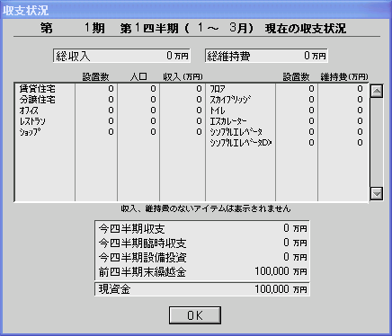
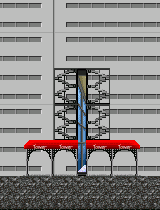
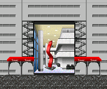
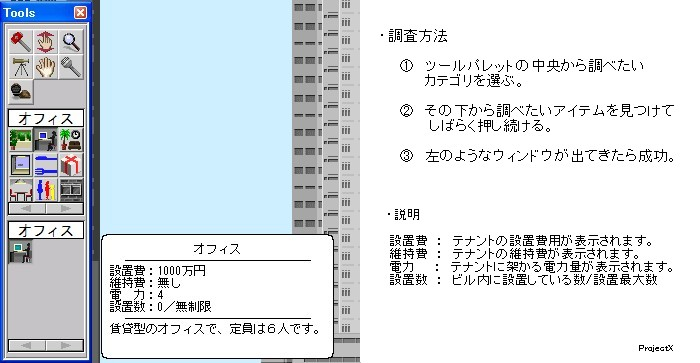
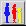
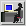
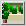
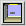
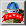
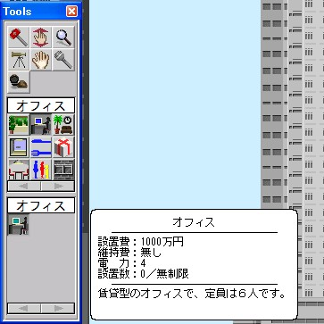

情報バー ： 水色の四角に囲まれているのが現在資金です。押すと収支状況ウィンドウが出てきます。
収支状況ウィンドウ：個々の事例において説明していきます。
支出には大まかに分けて3種類あります。テナント設置料とテナント維持費用、そしてイベント費用です。ここではテナント設置費について解説します。
テナント設置費とはテナントを設置したときに支払う費用です。このテナント設置費はテナントを立てるときに一括で支払う必要があります。 ですから、自分が持っている資金以上のテナントはたてることはできません。また立ててしまったテナントに関してはそのテナントを壊したとしても設置費は戻ってはきません。
フロアとロビーに関しては一ユニット単位で決められます。連続してロビーを設置した場合、その広さによって設置費がかかることになります。たとえば下記の写真Aでは1ユニット設置しているので 50万円掛かることになります。しかし写真Bでは10ユニット×50万円で500万円かかることになります。フロアもまた同様です。フロアとロビーに関してはテナント単位で数えるのではなくてユニット単位で数えるのを 覚えておいてください。
写真A：設置費50万円  写真B：設置費500万円 テナント設置費は個々のテナントであらかじめ決められており、低い物は100万円から高い物は1億円以上します。うかつに設置してしまうとゲームの存続を危うくする物も多くあります。 そのため設置する前にそのテナントの設置費用を知る必要があります。設置費用は以下のように知ることができます。
設置費は上のように知ることができますがリスト化すると使いやすくなります。下のリンクからたどってください。
データベース[設置費・維持費]：作成中
テナントを設置した場合、その都度設置費が持ち資金から差し引かれていきます。そしてその四半期（3ヶ月）内における総合計が上の写真にある水色の枠内の「今四半期設備投資」 に記載されます。この値は上の赤枠の「今四半期収支」と「今四半期臨時収支」の合計金額から差し引かれ次の四半期の「前四半期末繰越金」となります。
支出のなかでも、もっとも重要なのがテナント維持費です。テナントを作成するとほとんどがこの維持費がかかります。
テナントを設置した後、そのテナントを維持していくために経費が掛かります。このテナントを維持していく経費は 当然設置者であるビルオーナー、つまりプレイヤーの資金から差し引かれることになります。しかしテナントを設置したとしてもそのテナントがあるテナントに の管理下におかれていた場合は維持費は掛かりません。具体的にはホテルカテゴリには 宿泊室とフロントなどの管理室がありますが、宿泊室はフロントによって管理されているため維持費は掛かりません。しかしフロント自体は管理されているわけではないので 維持費が掛かります。同様にメンテナンスルームも維持費が掛かります。また、住民によって運営されているテナント（オフィスや住宅）も維持費は掛かりません。しかし 住民によって運営されているテナントの中でもショップとレストランは維持費が掛かります。 他にも階段などの維持の必要がないと思われる物も維持費の必要がありません。
| 何か他のテナントによる管理下のため維持費が必要ない | ホテル | シングルルーム | |
| ツインルーム | |||
| スイートルーム | |||
|  | ビル設備 | 駐車場 | |
| 住人によって運営されているため維持費が必要ない |  | オフィス | オフィス |
| タワー開発室 | |||
| 住宅 | 賃貸住宅 | ||
| 分譲住宅 | |||
| コンドミニアム | |||
| 維持の必要がない |  | ロビー | フロア |
|  | 移動設備 | 階段 | |
| 外観設備 | 看板 |
維持費はテナントを維持していくために必要な経費です。そのため他のテナントを管理しているテナントや ビル全体を管理していくビル設備、プレイヤー自身が運営する都市機能やショップ、レストランには例外なく掛かります。基本的には上記以外の全てのテナントに掛かることになります。ロビーとスカイブリッジについては後述。
| 他のテナントを管理するために維持費が必要 | ホテル | ホテルフロント | |
| メンテナンスルーム | |||
| ビル設備 | 駐車場設備 | ||
| 住民に無償提供をするために維持費が必要 | ビル設備 | セコムルーム | |
| 医療センター | |||
| 都市機能 | 小学校 | ||
| 住民に快適性を提供するために維持費が必要 | 都市機能 | 地下鉄駅 | |
| 憩いの広場 | |||
| 船着場 | |||
|  | ファイナルアイテム | ファイナルアイテム | |
| ビルの管理に維持費が必要 | ビル設備 | ゴミ回収場 | |
| 変電室 | |||
| 移動設備 | シンプルエレベータ | ||
| 大型エレベータ | |||
| エスカレータ | |||
| メンテナンスエレベータ | |||
| 経営の維持に維持費が必要 | 都市機能 | ロードショー館 | |
| 名画座 | |||
| イベントホール | |||
| ショップ | 全店舗 | |
| レストラン | 全店舗 |
維持費は一定時期おきにいっぺんに計上されます。設置費用と違うところはたとえその計上時期に資金がなかったとしても借金として維持費は必ず資金よりひかれます。 また維持費が掛かるテナントの中でも維持費が計上される時期が違うことがあります。主にショップやレストランは1ヶ月おきに、そのほかのテナントは四半期（3ヶ月）おきに計上されます。
| １ヵ月毎 | ３ヶ月毎 | ||
| ショップ | ロビー | |
| レストラン | 移動設備 | ||
| ファイナルアイテム | ホテル | ||
| ビル設備 | |||
| 都市機能 | |||
ロビーは設置するときと同様に維持費もその面積によって決まります。ロビーの維持費は１ユニット10万円です。またスカイブリッジ（渡り廊下） もロビーと同じく１ユニットにつき10万円取られます。収支状況においてはフロアは維持費が掛かることになっていますが、フロアに関しては維持費は取られません。
ショップ・レストランは維持費が掛かるテナントの中でも特別な存在です。それは他の維持費が掛かるテナントが自ら収支を稼ぎ出すことができないのに対して、 ショップやレストランは自ら収支を稼ぎ出すことができる点です。しかし固定金額が必ず入ってくるオフィスなどと違って維持費以上に儲かった分が収支となります。そのため 維持費以上を稼ぎ出せなかった場合は赤字、維持費以上を稼ぎ出した場合は黒字となります。詳細については収入の各種において説明します。
ピンク色の枠で囲まれた部分には維持費が掛かるすべてのテナントが記載されています。個々のテナントに掛かる維持費×設置数によって右端の 維持費が出てきます。その維持費をすべて合計した物が赤枠の総維持費となります。総維持費は青枠の総収入から引かれて下の水色の枠の今四半期収支となります。
テナント維持費は個々のテナントであらかじめ決められており、その額はテナントを設置している限り掛かり続けます。 そのため設置する前にそのテナントの維持費を知る必要があります。維持費は設置費を調べるのと同じように知ることができます。
維持費は上のように知ることができますがリスト化すると使いやすくなります。下のリンクからたどってください。
データベース[設置費・維持費]：作成中
イベント費用とはユーザーには回避不能なイベントによる支出の事を指します。具体的には以下の2つにイベントに関連して支出が発生します。
① 火災による消火活動の支出：高層消火隊ヘリコプター要請金額3000万円
② 爆弾テロによる資金要求：3000万円
この2つのイベント費用に関しては説明書を参照してください。